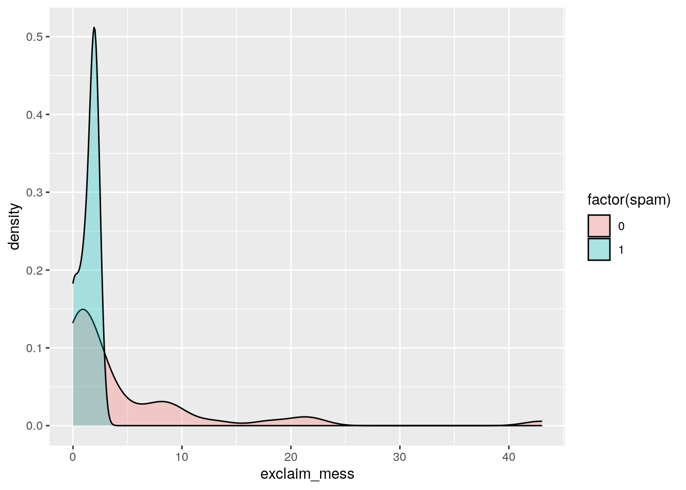

Getting started with Data
Packages
Packages are the fundamental units of reproducible R code. They include reusable functions, the documentation that describes how to use them, and sample data. In this lesson we will make use of two packages:
- tidyverse: Tidyverse is a collection of R packages for data science that adhere to a common philosophy of data and R programming syntax, and are designed to work together naturally. You can learn more about tidyverse here. But no need to go digging through the package documentation, we will walk you through what you need to know about these packages as they become relevant.
- openintro: The openintro package contains datasets used in openintro resources. You can find out more about the package here.
Once we have installed the packages, we use the
library() function to load packages into R.
Let’s load these two packages to be used in the remainder of this lesson.
library(tidyverse)
library(openintro)Data in R
In this lesson, we’ll begin by introducing the terminology of datasets and data frames in R.
One of the datasets that we will work with in this tutorial comes from the High School and Beyond Survey, which is a survey conducted on high school seniors by the National Center of Education Statistics.
The data are organized in what we call a data frame, where each row represents an observation or a case and each column represents a variable. If you ever use spreadsheets, such as a Google sheet or Excel, this representation should be familiar to you.
In this lesson we’ll work with the High School and Beyond dataset,
stored in the openintro package. The data are stored in a data
frame called hsb2. You can read more about this
dataset here.
Below is a preview of the dataset. You can use the arrow on the right
hand side to scroll through the variables, and the numbers on the bottom
to see different rows in the dataset.
## # A tibble: 200 × 11
## id gender race ses schtyp prog read write math science socst
## <int> <chr> <chr> <fct> <fct> <fct> <int> <int> <int> <int> <int>
## 1 70 male white low public gene… 57 52 41 47 57
## 2 121 female white midd… public voca… 68 59 53 63 61
## 3 86 male white high public gene… 44 33 54 58 31
## 4 141 male white high public voca… 63 44 47 53 56
## 5 172 male white midd… public acad… 47 52 57 53 61
## 6 113 male white midd… public acad… 44 52 51 63 61
## 7 50 male african amer… midd… public gene… 50 59 42 53 61
## 8 11 male hispanic midd… public acad… 34 46 45 39 36
## 9 84 male white midd… public gene… 63 57 54 58 51
## 10 48 male african amer… midd… public acad… 57 55 52 50 51
## # … with 190 more rowsTake a peek
When you want to work with data in R, a good first step is to take a
peek at what the data look like. The glimpse() function is
one good way of doing this. Click on the blue “Run Code” button to run
the code below, and take a look at the output of the
glimpse() function.
glimpse(hsb2)The output of glimpse() tells us that the data frame
includes 200 observations (rows) and 11 variables (columns). It also
lists the variables and their types, along with values of the first few
observations.
Now let’s put what you’ve learned so far to use!
Next, we’ll practice on another dataset, email50, which
contains a subset of incoming emails for the first three months of 2012
for a single email account. We’ll examine the structure of this dataset
and determine the number of rows (observations) and columns
(variables).
Take a peek at the email50 dataset using the
glimpse() function.
How many observations and variables are there?
glimpse(email50)Types of variables
When you first start working with a dataset, it’s good practice to take a note of its dimensions; how many rows or observations and how many columns or variables the data frame has.
You learned how to do this in the previous section using the
glimpse() function. You also learned how to take a quick
look at the list of variables in the dataset. In this section, we will
delve deeper into the categorization of variables as numerical
and categorical. This is an important step, as the type of
variable helps us determine what summary statistics to calculate, what
type of visualizations to make, and what statistical method will be
appropriate to answer the research questions we’re exploring.
There are two types of variables: numerical and categorical.
Numerical, in other words, quantitative, variables take on numerical values. It is sensible to add, subtract, take averages, and so on, with these values.
Categorical, or qualitative, variables, take on a limited number of distinct categories. These categories can be identified with numbers, for example, it is customary to see likert variables (strongly agree to strongly disagree) coded as 1 through 5, but it wouldn’t be sensible to do arithmetic operations with these values. They are merely placeholders for the levels of the categorical variable.
Numerical data
Numerical variables can be further categorized as continuous or discrete.
Continuous numerical variables are usually measured, such as height. These variables can take on an infinite number of values within a given range.
Discrete numerical variables are those that take on one of a specific set of numeric values where we are able to count or enumerate all of the possibilities. One example of a discrete variable is number of pets in a household. In general, count data are an example of discrete variables.
When determining whether a numerical variable is continuous or discrete, it is important to think about the nature of the variable and not just the observed value, as rounding of continuous variables can make them appear to be discrete. For example, height is a continuous variable, however we tend to report our height rounded to the nearest unit of measure, like inches or centimeters.
Categorical data
Categorical variables that have ordered levels are called ordinal.
Think about a survey question where you’re asked how satisfied you are with the customer service you received and the options are very unsatisfied, unsatisfied, neutral, satisfied, and very satisfied. These levels have an inherent ordering, hence the variable would be called ordinal.
If the levels of a categorical variable do not have an inherent ordering to them, then the variable is simply called categorical. For example, do you consume caffeine or not?
Variables in hsb2
Let’s take a moment to go through the variables in the High School and Beyond dataset:
glimpse(hsb2)## Rows: 200
## Columns: 11
## $ id <int> 70, 121, 86, 141, 172, 113, 50, 11, 84, 48, 75, 60, 95, 104, 3…
## $ gender <chr> "male", "female", "male", "male", "male", "male", "male", "mal…
## $ race <chr> "white", "white", "white", "white", "white", "white", "african…
## $ ses <fct> low, middle, high, high, middle, middle, middle, middle, middl…
## $ schtyp <fct> public, public, public, public, public, public, public, public…
## $ prog <fct> general, vocational, general, vocational, academic, academic, …
## $ read <int> 57, 68, 44, 63, 47, 44, 50, 34, 63, 57, 60, 57, 73, 54, 45, 42…
## $ write <int> 52, 59, 33, 44, 52, 52, 59, 46, 57, 55, 46, 65, 60, 63, 57, 49…
## $ math <int> 41, 53, 54, 47, 57, 51, 42, 45, 54, 52, 51, 51, 71, 57, 50, 43…
## $ science <int> 47, 63, 58, 53, 53, 63, 53, 39, 58, 50, 53, 63, 61, 55, 31, 50…
## $ socst <int> 57, 61, 31, 56, 61, 61, 61, 36, 51, 51, 61, 61, 71, 46, 56, 56…Using the glimpse() function, we can obtain a list of
the variables in the dataset and also see what the values stored in
these variables look like.
## Rows: 200
## Columns: 1
## $ id <int> 70, 121, 86, 141, 172, 113, 50, 11, 84, 48, 75, 60, 95, 104, 38, 11…The first variable is id, which is an identifier variable for the student. Strictly speaking, this is a categorical variable, though the labeling of this variable is likely not that useful since we would not use this variable in an analysis of relationships between the variables in the dataset.
## Rows: 200
## Columns: 2
## $ gender <chr> "male", "female", "male", "male", "male", "male", "male", "male…
## $ race <chr> "white", "white", "white", "white", "white", "white", "african …The next variable is gender, a categorical variable, with levels
"male" and "female". There is no inherent
ordering to the levels of this variable, no matter what anyone tells
you! So, this is just a categorical variable.
The same is true for the race variable, which has levels of
"white", "african american",
"hispanic", and "asian".
## Rows: 200
## Columns: 1
## $ ses <fct> low, middle, high, high, middle, middle, middle, middle, middle, m…Socio-economic status, on the other hand, has three levels
"low", "middle", and "high" that
have an inherent ordering, hence this variable is an ordinal
categorical variable.
## Rows: 200
## Columns: 2
## $ schtyp <fct> public, public, public, public, public, public, public, public,…
## $ prog <fct> general, vocational, general, vocational, academic, academic, g…School type and program are also both categorical variables, with no inherent ordering to their levels.
## Rows: 200
## Columns: 5
## $ read <int> 57, 68, 44, 63, 47, 44, 50, 34, 63, 57, 60, 57, 73, 54, 45, 42…
## $ write <int> 52, 59, 33, 44, 52, 52, 59, 46, 57, 55, 46, 65, 60, 63, 57, 49…
## $ math <int> 41, 53, 54, 47, 57, 51, 42, 45, 54, 52, 51, 51, 71, 57, 50, 43…
## $ science <int> 47, 63, 58, 53, 53, 63, 53, 39, 58, 50, 53, 63, 61, 55, 31, 50…
## $ socst <int> 57, 61, 31, 56, 61, 61, 61, 36, 51, 51, 61, 61, 71, 46, 56, 56…The remaining variables are scores that these students received in reading, writing, math, science, and social studies tests. Since these scores are all whole numbers, and assuming that it is not possible to obtain a non-whole number score on these tests, these variables are discrete numerical.
Next we will practice identifying variables in a different dataset.
Recall that the glimpse() function tells us the number
of observations and variables in a dataset as well as the names and
types of each column, along with a neatly printed preview of their first
few values.
Let’s have another look at the email50 data, so we can
practice identifying variable types.
Use the glimpse() function to view the variables in the
email50 dataset.
Remember that variable descriptions are available in the help file
for the dataset, which we can access by typing ?email50
(that is, type a question mark followed by the name of the dataset) in
the code box and running it.
Review the output to identify each variable as either numerical or categorical, and further as discrete or continuous (if numerical) or ordinal or not ordinal (if categorical).
glimpse(___)glimpse(email50)Categorical data in R: factors
There are various data classes in R. One of these classes is a factor, which is what R often stores categorical variables as. A common step in many analyses that involve categorical data is a subgroup analysis, where we work with only a subset of the data. For example, analyzing data only from students in public schools or only for students who identified as female. We can obtain these subsets by filtering for the specific levels we’re interested in.
Suppose we want to do an analysis of only the students in public schools in the High School and Beyond dataset. Let’s first find out how many such students there are.
One option for obtaining this information in R uses the
count() function from the dplyr package,
one of the packages included in the tidyverse. This package provides a
variety of functions for wrangling and summarizing data. Once such
function is count() which gives the frequencies of
occurrence of the unique values in a given column. In this case we’re
interested in the number of students for each level of the
schtyp (school type) column.
hsb2 %>%
count(schtyp)There are 168 students in public schools and 32 in private schools.
Let’s pause for a moment and dissect what happened in these two lines of code.
We can read the code as: “take the hsb2 data frame and
pipe it into the count() function, then
count() the occurrences of unique values in the
schtyp variable.”
You might be wondering what we mean by “pipe it into the
count() function”?
The pipe operator

The pipe operator, which is percent greater
than percent, tells R to pass the object that
comes before it into the first argument of the function that comes after
it. Mathematically, x pipe f(y) becomes f(x,
y), since x is piped into the first argument of the function
f().

For example, one way of adding numbers in R is using the
sum() function. The sum() function has as many
arguments as there are numbers you wish to add, where each number is
separated with a comma. For example, to add 3 and 4, we would use the
following code. Notice, 3 and 4 are separated by a comma, indicating
that these are the two numbers we wish for the sum()
function to add.
# Sum of 3 and 4, without pipe
sum(3, 4)## [1] 7If we wanted to do the same operation with a pipe, we would instead
use the code below. The pipe operator inserts 3 as the first argument
into the sum() function, which looks like
sum(3, 4).
# Sum of 3 and 4, with pipe
3 %>% sum(4)## [1] 7Piping 3 into the sum() function may seem a bit silly,
especially since it’s not much easier than typing sum(3,4).
However, as we progress through these tutorials you will see that the
piping operator will allow us to sequentially link together data
wrangling operations. This can save us a great deal of headache later
on, as the format of operations that use the pipe are far simpler to
read! We’ll start with short pipes and throughout the tutorial build up
to longer pipes that perform multiple operations.
Next, let’s use the filter() function to filter the data
to only include public school students.
hsb2_public <- hsb2 %>%
filter(schtyp == "public")We can read the above code as: “take the hsb2 data frame
and pipe it into the filter() function.
Next, filter() the data for cases where school type
is equal to public. Then, assign the resulting data
frame to a new data frame called hsb2 underscore
public.”
We should take note of two pieces of R syntax: the double equal
sign (==) and quotations (““). In R, ==
is a logical test for “is equal to”. R uses this
logical test to search for observations (rows) in the data frame where
school type is equal to public, and returns a data frame where this
comparison is TRUE for every row.
In R, variables that are categorical use characters (rather than
numbers) for values. To indicate to R that you want your logical test to
compare the values of a categorical variable to a specific level of that
variable, you need to surround the name of the level in quotations
(e.g. schtyp == "public"). The quotations tell R that the
value of the variable is a character, not a number. If you forget to use
quotations, R will give you an error message!
Now, if we make another frequency table of school type in the filtered dataset, we should only see public school in the output.
hsb2_public %>%
count(schtyp)Now we will practice filtering and handling factors with a different categorical variable.
Filtering based on a factor
Categorical data are often stored as factors in R. Next, we’ll
practice working with a factor variable, number, from the
email50 dataset. This variable tells us what type of number
(none, small, or big) an email contains.
Modify the code below to:
- Create a new dataset called
email50_bigthat is a subset of the originalemail50dataset containing only emails with"big"numbers. This information is stored in thenumbervariable. - Report the dimensions of
email50_bigusing theglimpse()function again. How many emails contain big numbers?
# Subset of emails with big numbers: email50_big
email50_big <- ___ %>%
filter(___)
# Glimpse the subset # We're looking for emails with big numbers, so filter for `number == "big"`.# Subset of emails with big numbers: email50_big
email50_big <- email50 %>%
filter(number == "big")# Subset of emails with big numbers: email50_big
email50_big <- email50 %>%
filter(number == "big")
# Glimpse the subset
glimpse(email50_big)Discretize variables
A common way of creating a new variable from an existing variable is discretizing, that is converting a numerical variable to a categorical variable based on certain criteria.
For example, suppose we are not interested in the actual reading
score of students, but instead whether their reading score is below
average or at or above average. First, we need to calculate the average
reading score with the mean() function. This will give us
the mean value, 52.23.
# Calculate average reading score and show the value
mean(hsb2$read)However, in order to be able to refer back to this value later on, we might want to store it as an object that we can refer to by name. So instead of just printing the result, let’s save it as a new object called avg underscore read.
# Calculate average reading score and store as avg_read
avg_read <- mean(hsb2$read)Before we move on, a quick tip: most often we want to do both; see
the value and also store it for later use. The approach we used here,
running the mean() function twice, is redundant. A less
redundant way to accomplish this task is to wrap your assignment code in
parentheses so that R will both assign the average value of reading test
scores to avg_read, and print out the value assigned to
avg_read.
(avg_read <- mean(hsb2$read))Next, in order to create the two groups of interest, we need to determine whether each student is either (1) below or (2) at or above average. For example, a reading score of 57 is above average, so is 68, but 44 is below. Obviously, going through each record like this would be tedious and error prone, so let’s explore another option!
New variable: read_cat
Instead we can create a new variable, named read_cat,
with the mutate() function and the helpful
if_else() function.
hsb2 <- hsb2 %>%
mutate(read_cat = if_else(read < avg_read,
"below average",
"at or above average")
)
hsb2First, we start with the data frame, hsb2, and pipe it
into the mutate() function. We use the
mutate() function to create a new variable called
read_cat. Note that we are using a new variable name here,
so that we do not overwrite the existing reading score variable, called
read.
The values of this new variable are simple: if the reading score of the student is below the average reading score, the variable will have the label “below average”, otherwise, the label will be “at or above average”.
This discretization can be accomplished using the
if_else() function in R:
- The first argument of the function is the logical test we wish to
perform:
read < avg_read. - The second argument is what we want the function to do if the result
of the logical test is
TRUE, in other words, if the student’s score is below the average score:"below average". - The third argument is what we want the function to do if the result
of the logical test is
FALSE, in other words, if the student’s score is above the average score:"at or above average".
Next, it’s your turn to discretize a different variable.
New variable num_char_cat
We’ll create a categorical version of the num_char
variable in the email50 dataset. num_char is
the number of characters in an email, in thousands. This new variable
will have two levels ("below median" and
"at or above median") depending on whether an email has
less than the median number of characters or equal to or more than that
value.
The median marks the 50th percentile, or midpoint, of a distribution, so half of the emails should fall in one category and the other half in the other. We will learn more about the median and other measures of center in the next tutorial in this series.
The email50 dataset is available in your workspace.
Modify the code below to:
- Find the median number of characters in emails, save the result to a
variable named
med_num_char. - Using
mutate(), create a new column callednum_char_cat, which discretizes thenum_charvariable into"below median"or"at or above median". - Assign the resulting data frame to a new data frame named
email50_updated. - Then, using
count(), determine the number of emails in each level ofnum_char_cat. Evaluate whether these counts match the expected numbers.
# Calculate median number of characters: med_num_char
med_num_char <- median(___)
# Create num_char_cat variable in email50
email50_updated <- email50 %>%
mutate(num_char_cat = if_else(num_char < med_num_char,
"[VALUE IF TRUE]",
"[VALUE IF FALSE]")
)
# Count emails in each category
email50_updated %>%
count(___)# Calculate median number of characters: med_num_char
med_num_char <- median(email50$num_char)# In the `if_else()` function, the second argument is the value `num_char_cat`.
# If the condition `num_char < med_num_char` it should take `TRUE`,
# else it should take `FALSE`.# Create num_char_cat variable in email50
email50_updated <- email50 %>%
mutate(num_char_cat = if_else(num_char < med_num_char,
"below median",
"at or above median")
)# Count emails in each category
email50_updated %>%
count(num_char_cat)# Calculate median number of characters: med_num_char
med_num_char <- median(email50$num_char)
# Create num_char_cat variable in email50
email50_updated <- email50 %>%
mutate(num_char_cat = if_else(num_char < med_num_char,
"below median",
"at or above median")
)
# Count emails in each category
email50_updated %>%
count(num_char_cat)Combining levels of a different factor
Another common way of creating a new variable based on an existing
one is by combining levels of a categorical variable. For
example, the email50 dataset has a categorical variable
called number with levels "none",
"small", and "big", but suppose we’re only
interested in whether an email contains a number. Next, we will create a
variable containing this information and also visualize it.
For now, do your best to understand the code we’ve provided to generate the plot. We will go through it in detail in the next section.
In the email50 dataset, the number variable
has three levels, "none", "some", and
"big". We want to create a new variable
(number_cat) that combines the levels "some"
and "big" into one level named "yes", and
keeps the "none" level separate as a level named
"no". This should sound similar to how we used the
if_else() function previously, where the logical condition
we want to check is whether the level of number is equal to
(==) "none".
Use what you know about the mutate and
if_else() functions to:
- Create a new column in
email50callednumber_catwhich discretizes thenumbervariable into"no"and"yes". - Assign the resulting data frame to a new data frame named
email50_updated. - Run the code provided to visualize the distribution of the
number_catvariable.
# Create number_cat column in email50
email50_updated <- email50 %>%
mutate(___ = if_else(___,
"[VALUE IF TRUE]",
"[VALUE IF FALSE]")
)
# Visualize the distribution of number_cat
ggplot(email50_updated, aes(x = number_cat)) +
geom_bar()number_cat = if_else(number == "none",
"[VALUE IF TRUE]",
"[VALUE IF FALSE]") number_cat = if_else(number == "none",
"no",
"[VALUE IF FALSE]") number_cat = if_else(number == "none",
"no",
"yes") # Create number_cat column in email50
email50_updated <- email50 %>%
mutate(number_cat = if_else(number == "none",
"no", # if number is "none", make number_cat "no"
"yes" # if number is not "none", make number_cat "yes"
)
)
# Visualize the distribution of number_cat
ggplot(email50_updated, aes(x = number_cat)) +
geom_bar()Visualizing numerical data
The most logical and most useful first step of any data analysis is an exploratory analysis. And a very important and informative component of exploratory data analysis is visualization. We’ll visualize the relationship between the math and science scores of the students in the High School and Beyond dataset.
ggplot(data = hsb2, aes(x = science, y = math)) +
geom_point()Let’s pause for a moment and review what’s going on in the code above.
- We use the
ggplot()function to create plots. - The first argument is the data frame containing the data we wish to
plot:
data = hsb2. - In the
aesthetics argument, we map variables from the data frame to certain components of the plot. In this case we want to plot science test scores on the x and math test scores on the y axis:aes(x = science, y = math). - Lastly, we specify what
geometric shapes should be used to represent each observation. In this case, we want to make a scatterplot, so we want each observation to be represented by a “point” on the plot, hence we add use thegeom_point()function to add a points layer to the plot.
In summary, the main function is ggplot(), the first
argument is the data to use, then the aes maps the variables to certain
features of the plot, and finally the geom informs the type of plot you
want to make.
Another important aspect to note here is that the
geom_XXX() function is separated from the
ggplot() function with a plus, +. As we
mentioned earlier, ggplot2 plots are constructed in series of layers.
The plus sign separates these layers. Generally, the + sign
can be thought of as the end of a line, so you should always hit
enter/return after it. While it is not mandatory to move to the next
line for each layer, doing so makes the code a lot easier to organize
and read. So, we will follow this structure in this tutorial and we
strongly recommend you do so whenever you’re making plots with
ggplot2.
Interpreting a visualization
Now that you’ve learned how to make the plot, let’s talk about what the plot says.
ggplot(data = hsb2, aes(x = science, y = math)) +
geom_point() +
geom_smooth(method = "lm", se = FALSE)We can see that there is a positive relationship between the science and math scores of students, meaning that students who score highly in science tend to also score highly in math. Probably not that surprising a result.
Math, science, and program
Let’s plot the same math and science test scores, but this time let’s also consider the program that the student is in: general, academic, or vocational.
ggplot(data = hsb2, aes(x = science, y = math, color = prog)) +
geom_point()The code looks very similar to what we used before, except that we
now have one other aesthetic mapping between the program variable and
the color of the points that represent the observations.
Note that we type the name of the variable as it appears in the data
frame: prog.
How does the plot below differ from the plot above? Look at the plot above and think about where the lines would go if we fit a separate line for each level of the program variable (each color of points). The result would be a plot that looks like the one below.
ggplot(data = hsb2, aes(x = science, y = math, color = prog)) +
geom_point() +
geom_smooth(method = "lm", se = FALSE)The same positive relationship between math and science scores is still apparent. But we can also see that students in academic programs, shown with green points, tend to have higher math scores relative to their science scores than those in vocational programs, in blue, and general programs, in red.
We will wrap up this lesson with some practice creating a similar plot with different variables.
Visualizing numerical and categorical data
Next we’ll visualize the relationship between two numerical variables
from the email50 dataset, separated by whether or not the
email was spam. This means that we will use an aspect of the plot (like
color or shape) to identify the levels in the spam variable
so that we can compare plotted values between them.
Recall that in the ggplot() function, the first argument
is the dataset, then we map the aesthetic features of the plot to
variables in the dataset, and finally the geom_XXX() layer
informs how data are represented on the plot.
Next, we will make a scatterplot by adding a
geom_point() layer to the ggplot() call.
- Create a scatterplot of number of exclamation points
(
exclaim_mess) on the y-axis vs. number of characters (num_char) on the x-axis. - Color points by whether or not the email is
spam.
Note that when you first make the plot, you will see a color gradient
in place of where you expected to see a legend like before. This
gradient appears because spam is stored as a numerical
variable (0 = no, 1 = yes). But, we want to use it as a categorical
variable in this plot. To do this we can force R to think of
spam as a factor, by temporarily converting it to a factor
inside the ggplot. To do this we insert the name of the
variable we want to convert to a factor (spam) into the the
factor() function (e.g. factor(spam)).
ggplot(email50, aes(x = ___, y = ___, color = ___)) +
[GEOM]ggplot(email50, aes(x = num_char, y = ___, color = ___)) +
[GEOM]ggplot(email50, aes(x = num_char, y = exclaim_mess, color = ___)) +
[GEOM]ggplot(email50, aes(x = num_char, y = exclaim_mess, color = spam)) +
{GEOM}ggplot(email50, aes(x = num_char, y = exclaim_mess, color = spam)) +
geom_point()Based on the plot, does there appear to be a relationship between these variables?
Other plots …
ggplot(email50, aes(x = exclaim_mess, fill = factor(spam))) +
geom_density(alpha=0.3)
ggplot(email50, aes(x = password, fill = factor(spam))) +
geom_density(alpha=0.3)ggplot(email50, aes(x = num_char, fill = factor(spam))) +
geom_density(alpha=0.3)ggplot(email50, aes(x = dollar, fill = factor(spam))) +
geom_density(alpha=0.3)ggplot(email, aes(x = num_char, y=spam, color = factor(spam))) +
geom_point()ggplot(email, aes(x = dollar, y=spam, color = factor(spam))) +
geom_point()ggplot(email, aes(x = exclaim_mess, y=spam, color = factor(spam))) +
geom_point()str(email50)## tibble [50 × 21] (S3: tbl_df/tbl/data.frame)
## $ spam : Factor w/ 2 levels "0","1": 1 1 2 1 1 1 1 1 1 1 ...
## $ to_multiple : Factor w/ 2 levels "0","1": 1 1 1 1 1 1 1 1 1 1 ...
## $ from : Factor w/ 2 levels "0","1": 2 2 2 2 2 2 2 2 2 2 ...
## $ cc : int [1:50] 0 0 4 0 0 0 0 0 1 0 ...
## $ sent_email : Factor w/ 2 levels "0","1": 2 1 1 1 1 1 1 2 2 1 ...
## $ time : POSIXct[1:50], format: "2012-01-04 13:19:16" "2012-02-16 20:10:06" ...
## $ image : num [1:50] 0 0 0 0 0 0 0 0 0 0 ...
## $ attach : num [1:50] 0 0 2 0 0 0 0 0 0 0 ...
## $ dollar : num [1:50] 0 0 0 0 9 0 0 0 0 23 ...
## $ winner : Factor w/ 2 levels "no","yes": 1 1 1 1 1 1 1 1 1 1 ...
## $ inherit : num [1:50] 0 0 0 0 0 0 0 0 0 0 ...
## $ viagra : num [1:50] 0 0 0 0 0 0 0 0 0 0 ...
## $ password : num [1:50] 0 0 0 0 1 0 0 0 0 0 ...
## $ num_char : num [1:50] 21.705 7.011 0.631 2.454 41.623 ...
## $ line_breaks : int [1:50] 551 183 28 61 1088 5 17 88 242 578 ...
## $ format : Factor w/ 2 levels "0","1": 2 2 1 1 2 1 1 2 2 2 ...
## $ re_subj : Factor w/ 2 levels "0","1": 2 1 1 1 1 1 1 2 2 1 ...
## $ exclaim_subj: num [1:50] 0 0 0 0 0 0 0 0 1 0 ...
## $ urgent_subj : Factor w/ 2 levels "0","1": 1 1 1 1 1 1 1 1 1 1 ...
## $ exclaim_mess: num [1:50] 8 1 2 1 43 0 0 2 22 3 ...
## $ number : Factor w/ 3 levels "none","small",..: 2 3 1 2 2 2 2 2 2 2 ...?email50